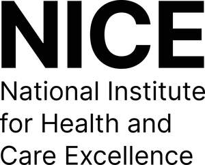

Trade Mark Journal No.2025/026 27 June 2025
UK00004215989 9 June 2025 (9,16,35,38,41,42,44,45)
Mark 1
Mark 2

- Class 9
- Scientific, nautical, surveying, photographic, cinematographic, optical, weighing, measuring, signalling, checking (supervision), life-saving and teaching apparatus and instruments; apparatus and instruments for conducting, switching, transforming, accumulating, regulating or controlling electricity; databases; computer databases; computer software; computer software being information databases for collating evidence and information; apparatus for recording, transmission or reproduction of sound or images; magnetic data carriers, recording discs; data processing equipment and computers; electronic media; media for recording sound; media for recording images; CD-Roms; DVDs; audio recordings; video recordings; Computer application software; Computer programs; Computer software relating to the medical field; Software as a medical device [SaMD], downloadable; Computer software for use in medical decision support systems; Health monitoring software; Artificial intelligence software for healthcare; Machine learning software for healthcare; Protective and safety equipment; Safety, security, protection and signalling devices; Testing and quality control devices.
- Class 16
- Paper, cardboard, printed matter, reports, manuals, photographs, stationery, office requisites, instructional and teaching materials.
- Class 35
- Advertising; business management; business administration; office functions; compilation of information into computer databases; database management; business services provided in the medical sector, namely, providing computer databases containing medical information, medical resources, clinical and non-clinical evidence, drug and device information, and support information relating to the aforesaid; Management advice; Management assistance in the establishment of commercial undertakings; Statistical analysis and reporting services for business purposes; Compilation of statistical data relating to medical research; Advertising services to promote public awareness in the field of social welfare; Compilation of statistical data for use in scientific research; Retail services in relation to medical instruments; Health care cost management; Administrative management of health care clinics; Negotiation of contracts with health care payors; Data processing services in the field of healthcare; Business administration services in the field of healthcare; Medical cost management; Administrative services for medical referrals; Maintaining personal medical history records and files; Computerized management of medical records and files; Maintaining a registry of certified medical technical professionals; Advertising services to promote public awareness of medical conditions; Provision of business statistical information relating to medical matters; Maintaining files and records concerning the medical condition of individuals; Health care cost review; Compilation of statistics relating to health care utilization; Medical billing services for doctors; Providing recommendations of goods to consumers for commercial purposes; Providing consumer product recommendations; Business consultation.
- Class 38
- Telecommunications; providing access to databases; electronic exchange of data stored in databases accessible via telecommunication networks; transmission and reception [transmission] of data via telecommunications networks; Transmission of information relating to pharmaceuticals, medicine and hygiene; Transmission of information and images relating to pharmaceuticals, medicine and hygiene.
- Class 41
- Education; providing of training; education and training information, including the aforesaid provided on-line from a computer database or the Internet; education services, namely, providing an online database of medical information, medical resources, clinical and non-clinical evidence, drug and device information, and support information relating to the aforesaid; Publication of documents in the field of training, science, public law and social affairs; Organisation of medical symposia relating to sciences; Courses (Training -) relating to science; Conducting of educational courses in science; Education in the field of computing science; Organisation of conferences and symposia in the field of medical science; Publishing of scientific papers; Publication of scientific information journals; Publishing scientific papers in relation to medical technology; Publishing of scientific papers in relation to medical technology; Publishing and issuing scientific papers in relation to medical technology; Training for handling scientific instruments and apparatus for research in laboratories; Education services relating to drugs; Courses (Training -) relating to medicine; Education services relating to medicine; Teaching in the field of medicine; Adult education services relating to medicine; Training services relating to orthopaedic medicine; Organization of seminars and conventions in the field of medicine; Publishing of journals, books and handbooks in the field of medicine; Health education; Health and fitness training; Health and wellness training; Instruction courses relating to health; Training services relating to occupational health; Education in the field of occupational health and safety; Providing of training in the field of health care and nutrition; Medical education services; Medical tuition services; Publishing of medical publications; Publication of medical texts; Instruction in nutrition [not medical]; Provision of medical instruction courses; Teaching services relating to the medical field; Training services in the field of medical disorders and their treatment; Training services relating to health and safety; Provision of educational services relating to health; Provision of educational health and fitness information; Educational and training services relating to healthcare; Conducting educational support programmes for healthcare professionals; Specialisation courses for doctors; Technical training relating to safety; Vocational education relating to personal safety; Education and training in the field of occupational health and safety; Education services relating to quality services.
- Class 42
- Biological research, clinical research and medical research; Medical research laboratory services; Medical and pharmacological research services; Scientific research for medical purposes; Providing medical research information in the field of pharmaceuticals; Research and development services in the field of medical preparations; Scientific investigations for medical purposes; Provision of information and data relating to medical and veterinary research and development; Providing medical and scientific research information in the field of pharmaceuticals and clinical trials; Scientific research in the field of social medicine; Research relating to molecular sciences; Contract research services relating to molecular sciences; Natural science services; Providing genetic science information; Science and technology services; Research relating to science; Providing science technology information; Advisory services relating to science; Research in the field of materials science; Scientific services; Scientific consultancy; Research (Scientific -); Scientific analysis; Scientific risk assessment; Scientific design services; Scientific research consulting; Scientific technological services; Scientific advisory services; Scientific testing services; Scientific research services; Scientific laboratory services; Scientific and industrial research; Scientific computer programming services; Scientific and technological services; Provision of surveys [scientific]; Provision of scientific information; Issuing of scientific information; Preparation of scientific reports; Scientific research and development; Conducting of scientific studies; Scientific research and analysis; Compilation of scientific information; Genetic mapping for scientific purposes; Scientific research conducted using databases; Scientific research relating to bacteriology; Scientific research relating to biology; Computer aided scientific research services; Computer aided scientific analysis services; Scientific research relating to genetics; Genetic testing for scientific research purposes; DNA screening for scientific research purposes; Advisory services relating to scientific research; Scientific services and research relating thereto; Advisory services relating to scientific instruments; Scientific research in the field of epidemiology; DNA analysis services for scientific research purposes; Consultancy in the field of scientific research; Airborne remote monitoring relating to scientific explorations; Provision of scientific information relating to chemicals; Provision of information relating to scientific research; Scientific and technological research relating to patent mapping; Providing scientific research information in the field of genetics; Providing scientific research information in the field of pharmaceuticals; Provision of scientific information relating to the chemical industry; Scientific research in the field of genetics and genetic engineering; Providing scientific research information and results from an online searchable database; Scientific research for medical purposes in the area of cancerous diseases; Providing scientific information in the field of medical disorders and their treatment; Design and development of medical diagnostic apparatus; Research relating to medicines; Development of gene-based medicines; Development of pharmaceutical preparations and medicines; Research and development of vaccines and medicines; Research and development of siRNA drugs; Research and development of mRNA drugs; Services for assessing the efficiency of veterinary drugs; Research relating to medicine; Medical research; Non-medical, ultrasound imaging services; Electronic storage of medical records; Computer programming in the medical field; Design and development of medical technology; Medical research in the field of epidemiology; Medical research in the field of oncology; Writing of computer programs for medical applications; Analysis of human tissues for medical research; Design and development of computer software for use with medical technology; Product safety testing; Safety technological testing services; Consumer product safety testing; Safety testing of products; Product safety testing services; Technical advice relating to safety; Consumer product safety testing and consultation; Advisory services relating to the safety of the environment; Quality control; Quality testing; Quality assessment; Quality audits; Quality checking; Product quality evaluation; Product quality testing; Quality assurance services; Certification [quality control]; Quality control of services; Product quality testing services; Quality control and authentication services; Process monitoring for quality assurance; Quality control of goods and services; Quality testing of products for certification purposes; Testing services for the certification of quality or standards; Advisory services in the field of product development and quality improvement of software; Product development consultation; Technological consultation services.
- Class 44
- Medical services; Scientific advisory services; provision of medical information; services for the provision of medical care information; medical information retrieval services; health care services, namely, providing a database featuring inputting and collection of data and information for treatment and diagnostic purposes; providing an internet-based database of medical information where healthcare providers can enquire about medical issues and procedures, and find medical information, medical resources, clinical and non-clinical evidence, drug and device information, and support information relating to the aforesaid; providing an internet-based database of medical information, medical resources, clinical and non-clinical evidence, drug and device information, and support information relating to the aforesaid, all the aforesaid being medical services; providing an online searchable database featuring clinical and non-clinical evidence, drug and device information, and support information relating to the aforesaid; Advisory services relating to medical apparatus and instruments; Rental of apparatus and installations in the field of medical technology; Providing information relating to the rental of medical machines and apparatus; Advisory services relating to medical instruments; Alternative medicine services; Regenerative medicine services; Provision of information relating to medicine; Providing news and information in the field of medicine; Healthcare; Health counselling; Health screening; Health centres; Health consultancy; Healthcare services; Health risk assessment; Occupational health consultancy; Providing health information; Mental health services; Health assessment surveys; Healthcare advisory services; Provision of health information; Mental health screening services; Professional consultancy relating to health; Providing health information via a website; Professional consultancy relating to health care; Consultancy services relating to health care; Information services relating to health care; Collation of information in the healthcare sector; Preparation of reports relating to health care matters; Providing health care information via a global computer network; Medical and health services relating to DNA, genetics and genetic testing; Medical screening; Medical testing; Medical assistance; Medical care; Medical counselling; Medical information; Medical services; Medical examination; Medical tele-reporting [medical services]; Medical diagnostic services; Medical assistance services; Medical evaluation services; Medical information retrieval services; Issuing of medical reports; Compilation of medical reports; Immunodetection services for medical purposes; Health care consultancy services [medical]; Providing medical support in the monitoring of patients receiving medical treatments; Medical assistance consultancy provided by doctors and other specialized medical personnel; Medical analysis services for diagnostic and treatment purposes provided by medical laboratories; Advisory services relating to medical problems; Medical advice for individuals with disabilities; Providing information relating to medical services; Advisory services relating to medical services; Medical testing for diagnostic or treatment purposes; Lifestyle counselling and consultancy for medical purposes; Providing medical information in the healthcare sector; Drug screening for medical diagnosis and treatment; Pathological examination for medical diagnosis and treatment; Services for the preparation of medical reports; Medical information services provided via the Internet; Medical analysis services relating to the treatment of persons provided by a medical laboratory; Analysis of human tissues for medical treatment; Providing medical information from a web site; Medical treatment services provided by clinics and hospitals; Consultancy and information services relating to medical products; Services for the provision of medical care information; Charitable services, namely, providing medical services to needy persons; Medical analysis for the diagnosis and treatment of persons; Medical examination of individuals (Provision of reports relating to the -); Medical services for the diagnosis of conditions of the human body; Medical evaluation services for patients receiving rehabilitation for purposes of guiding treatment and assessing effectiveness; Health assessment services; Health screening services; Public health counselling; Healthcare information services; Managed health care services; Information relating to health; Personality assessment services [mental health services]; Providing information in the field of health via a website; Advice relating to the personal welfare of elderly people [health]; Nursing care; Psychological care; Provision of health care services; Advisory services relating to health care; Consulting services relating to health care; Rental of medical and health care equipment; Medical care and analysis services relating to patient treatment; Consultancy provided via the Internet in the field of body and beauty care; Pharmaceutical consultation; Medical consultation.
- Class 45
- Legal services relating to social insurance claims; Consultancy services relating to health and safety; Health and safety risk management; Information services relating to health and safety; Safety evaluation; Occupational safety consultancy; Radiation safety consulting; Rental of safety equipment; Information services relating to safety; Health and safety risk assessment services; Advisory services in relation to safety; Safety, rescue, security and enforcement services; Inspection for safety purposes; Providing advice in the field of public safety; Political advisory services; security services.
National Institute for Health and Care Excellence
Representative: Page, White & Farrer Limited